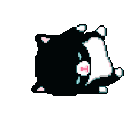
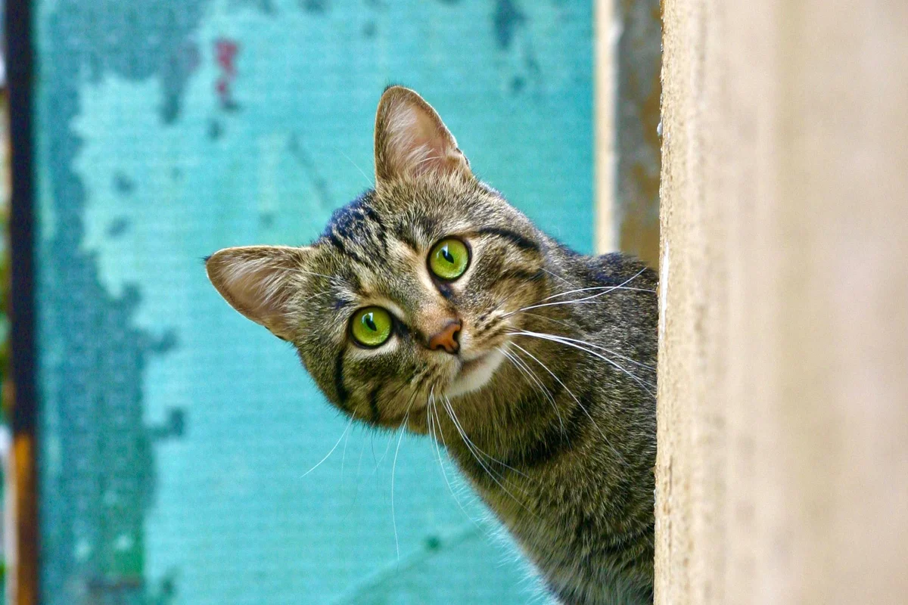

Bevezető
Ezt a weblapot teljes önerőből és saját kreativitásunkból finanszíroztuk, így e munka értékelésekor, kérjük ezt vegyék figyelembe. Lomhaságunk és érzékeny lelkeink gyanánt kritikát (legyen az építő kritika, vagy sem) nem vagyunk hajlandóak eltűrni/elfogadni. Ezenkívül szükségesnek érezzük tisztázni azt is, hogy a weblapon szereplő állatok mind beleegyeztek a képeik teljes jogú felhasználására és nyílvános közzétételére. Köszönjük a megértésüket.
Miért jó egy háziállat?
- Mert van ki várjon otthon, hogy szétnyalhassa és összekoszolhassa az amúgy tiszta ruháid, legyen az kutya, póniló vagy medve.
- Új családtag (hurrá!)
- Végre van ki után felszedd a szart (valóra váltak az álmaid)
- Viccelődést félretéve egy háziállat tartása felelősséggel jár az állat egészséges fejlődése és eltartása gyanánt (ezért nem ajánlott 4 éveseknek hörcsögöt és nyuszit venni). Felelősebb leszel általánosságban a tetteidért, a viselkedésedért és a szavaidért.
Miért rossz egy háziállat?
Ahogy fent már elmondtam, egy állat eltartása komoly felelősséggel jár, így érdemes tisztában legyünk a kedvelt jószágaink hátrányaival is. (Azon kívül, hogy a múlt héten a pitbullod leharapta egy óvodás kisgyereknek a karját.)
- Akkor is foglalkoznod kell velük, amikor nem akarsz/elfoglalt vagy. (De mivel felelősségteljes nagyfiú vagy ezért megeteted a macskát, hogy ne haljon éhen.)
- Költeni kell rájuk, ha baj van (főleg akkor, ha egy nem fajtiszta röfögős francia bulldogot vettél, amelyet ráadásul kegyelemdöfésként Cukinak neveztél el.)
- Mindig van az az egy bizonyos flúgos gyerek, aki halálra akarja dögönyözni a kiskedvenced, így vagy 20000 Hz-en kezd el sikoltozni, vagy nem marad kutyád.
Macska 
A macska táplálása
A macska valódi húsevő, háziasítása kevésbé érintette étkezési szokásainak alakulását, mint a kutyáét. Ugyanakkor nem szabad kizárólag hússal vagy májjal etetni őket. A vadon élő macskafélék is elfogyasztják a zsákmányállat beleit, így növényi eredetű tápanyagokat is felvéve biztosítják kiegyensúlyozott étrendjüket. Nincs ez másként a házi macskánál sem, szüksége van növényi tápanyagforrásokra is, ugyanakkor a nagyobb részt gabonát tartalmazó eledelek hosszú távon egészségkárosítóak számukra.
Kell-e ivartalanítani a macskákat?
Németországban például számos településen kötelező ivartalaníttatani a kijárós macskákat. Ennek célja, hogy csökkentsék az ellenőrizetlen szaporodást és ezáltal a kóbor macskák számát is. A macskák ivartalanítása tehát állatjóléti szempontból is indokolt, mivel így kevesebb macskának kell a vadonban az életéért küzdenie.
Meddig élnek a macskák?
Fő szabály szerint a macskák átlagéletkora körülbelül 15 év. Ez azt jelenti, hogy egyesek akár néhány évvel idősebb kort is megélhetnek. Az azonban, hogy egy házimacska valóban hány évig élhet, a génjeitől és az életmódjától függ. És persze attól is, hogy a macskát mennyire érinti az időskori gyengeség. Minél egészségesebben él az állat, annál nagyobb a valószínűsége, hogy az időskori gyengeség tünetei lassabban alakulnak ki. Tény, hogy az alultápláltság vagy a helytelen táplálkozás, valamint az alapbetegségek azonban megrövidíthetik a macska élettartamát.
Ápolás
A macskák esetében az ápolás jóval egyszerűbb folyamat, mint a kutyusoknál. Ez annak köszönhető, hogy a cicák tisztán tartják magukat, és ezáltal ritkán van szükségük fürdetésre. De elengedhetetlen, hogy rendszeresen átfésüld kedvenced bundáját, különösen, ha hosszú szőrű egyed. Ezenfelül a gyakori fogmosás szintén fontos ahhoz, hogy cicád fogai egészségesek maradjanak. Továbbá rendszeresen ellenőrizd az állat karmait, és amennyiben azok túl hosszúak, vágd le őket vagy kérd állatorvosod segítségét hozzá. Annak érdekében, hogy kedvenced ne a bútoraidon élesítse karmait, ajánlott egy kaparófa beszerzése is.
Valami szöveg a főoldalra(döntsétek el ki csinálja meg mert én már a bootstrappel eleget csináltam ezt a szart)
Szöveg Szöveg Szöveg Szöveg Szöveg Szöveg Szöveg Szöveg Szöveg Szöveg Szöveg Szöveg Szöveg Szöveg Szöveg Szöveg Szöveg Szöveg Szöveg Szöveg Szöveg
Még több szöveg
Szöveg Szöveg Szöveg Szöveg Szöveg Szöveg Szöveg Szöveg Szöveg Szöveg Szöveg Szöveg Szöveg Szöveg Szöveg Szöveg Szöveg Szöveg Szöveg Szöveg Szöveg